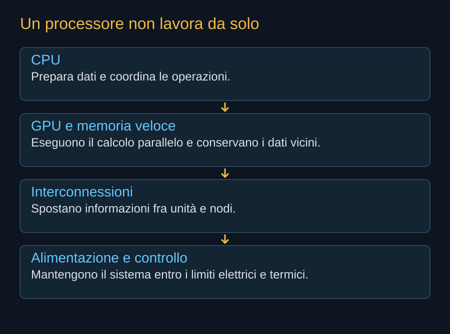
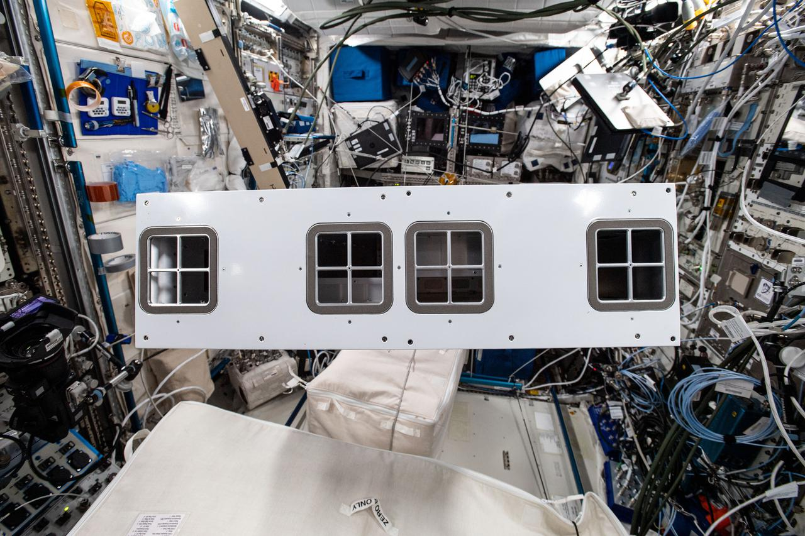

Il processore è il centro commerciale del satellite, ma funziona soltanto dentro una catena di dispositivi. La GPU esegue molte operazioni in parallelo. La CPU prepara e coordina attività, controlla flussi e gestisce compiti che non si prestano allo stesso modo al parallelismo. La memoria conserva ciò che i processori devono trovare vicino. Le interconnessioni permettono alle unità di collaborare. Un collo di bottiglia in uno di questi passaggi può lasciare inutilizzata una parte dell’hardware più costoso.
Il significato dell’accordo NVIDIA
L’annuncio del 24 agosto 2026 collega la prima generazione Starmind a una Vera Rubin NVL72 ottimizzata. La piattaforma terrestre combina 72 GPU Rubin e 36 CPU Vera con una rete interna ad alta capacità. Sono informazioni sull’architettura di riferimento. L’annuncio non permette di affermare che AI1 porterà esattamente lo stesso numero di ogni componente né che conserverà tutte le prestazioni del sistema terrestre.
“Ottimizzata” è quindi una parola da riempire con verifiche. Può comportare modifiche alla struttura, alla distribuzione elettrica, ai percorsi termici e alla gestione degli errori. Anche il modo di sostenere una scheda deve cambiare quando deve superare vibrazioni di lancio e lavorare senza un tecnico che possa sostituirla. L’obiettivo è trasferire una capacità informatica, mantenendo ciò che conviene dell’ecosistema software.


La memoria è una parte della potenza
Un modello può richiedere una grande quantità di memoria soltanto per conservare i propri parametri. A questa si aggiungono dati intermedi e stato delle richieste in corso. Se lo spazio disponibile non basta, dividere il lavoro fra più unità aumenta la necessità di comunicazioni. Il numero di operazioni teoriche al secondo perde significato quando il processore attende dati.
La precisione numerica modifica sia la quantità di memoria sia il tipo di prestazione dichiarata. Un valore ottenuto con un formato molto compatto non può essere confrontato senza spiegazioni con un calcolo a precisione maggiore. Il criterio utile resta la qualità del risultato richiesto. Non si può attribuire al satellite un primato informatico ricavato soltanto dalla denominazione del rack.


Separare il calcolo dal governo del veicolo
Un programma caricato da un cliente può contenere errori, consumare troppe risorse o interrompersi. Il controllo del satellite deve continuare a funzionare. La separazione riguarda risorse elettriche, canali di comunicazione e software, oltre alle autorizzazioni di accesso. Il nodo deve poter ridurre o interrompere il lavoro del payload quando temperatura, energia o sicurezza lo richiedono.
Questa capacità introduce una negoziazione fra servizio e missione. Sul terreno un operatore può spostare il carico in un altro edificio; in orbita deve trovare un nodo compatibile e un percorso disponibile. La piattaforma informatica e la costellazione devono essere progettate insieme, perché il comportamento di un guasto attraversa entrambi i sistemi.
Modularità e ricambio
SpaceX presenta l’architettura come aperta a moduli di fornitori differenti. La scelta NVIDIA per la prima generazione riguarda una configurazione concreta e può convivere con un’interfaccia pensata per evolvere. Non significa che i processori possano essere sostituiti fisicamente in volo come in un edificio. Questa possibilità richiederebbe un sistema di manutenzione orbitale distinto, non documentato dalla semplice parola “modulare”.
Il beneficio più immediato della modularità può essere nella fabbrica: mantenere interfacce e processi mentre cambiano generazioni di chip. Anche qui esiste un limite. Un nuovo modulo che assorbe più energia o chiede una temperatura diversa può imporre modifiche all’intero veicolo. La compatibilità deve comprendere elettricità, calore, massa e software, non soltanto la forma del connettore.
Fonti pubbliche e tracce
- NVIDIA, SpaceXAI e prima generazione Starmind. 24 agosto 2026. Conferma l’adattamento di Vera Rubin NVL72; non pubblica una distinta completa del satellite.
- NVIDIA, architettura Vera Rubin. Descrizione tecnica dell’architettura terrestre. Non trasferire automaticamente conteggi, potenze e prestazioni alla versione orbitale.
- SpaceX, Starmind e scheda AI1. Consultata il 10 ottobre 2026. Fonte aziendale per la scheda corrente e gli obiettivi Gigasat; non rapporto di prove in volo.
- NASA, effetti delle radiazioni sull’avionica. Dose totale, eventi singoli e tecniche di mitigazione. Non determina il tasso di guasto dei processori scelti per AI1.